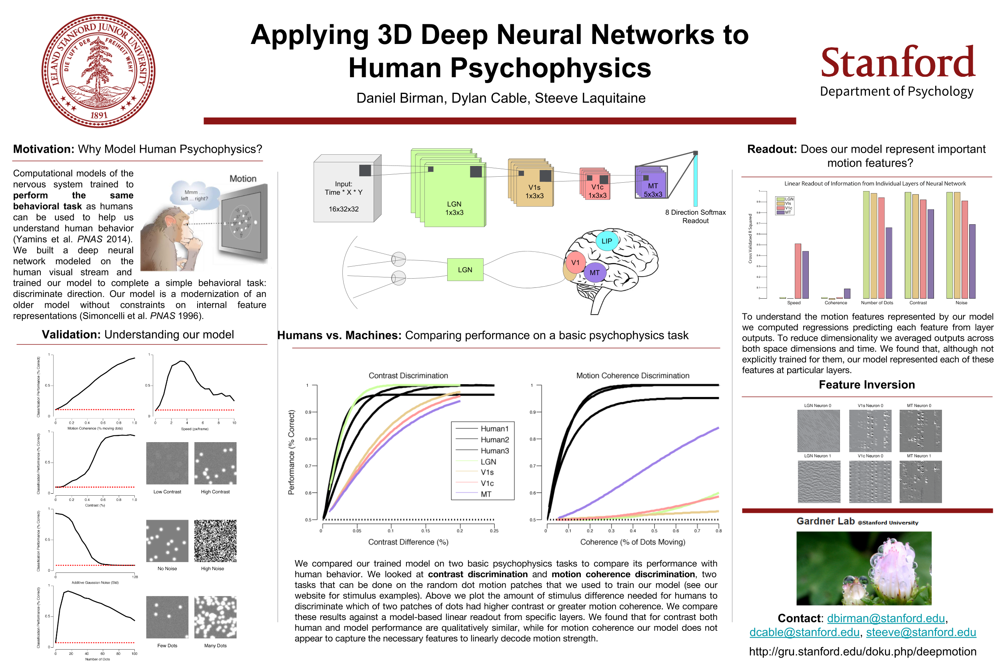

Stanford University
Mechanisms of visual attention
Attending to a location or feature in a scene increases the chances that a stimulus will reach conscious perception. What neural mechanism is responsible for this? In this experiment we investigate attention to contrast and motion and show that in some situations attention reduces our ability to perceive accurately.
with Justin Gardner at Gardner Lab; Code; Stim
- This work will be presented at SFN 2016
- Presented at MAD lunch, a Stanford Psychology Department journal club
- Presented at the Stanford Psychology Department Colloquium Lightning Talks in Fall 2015
- Presented at the Stanford Psychology Department FriSem in Spring 2015
What is it like to be a monkey?
This is an ongoing project. Check out our news and views to learn more about the initial ideas!
Birman, D., & Gardner, J. L. (2016). Parietal and prefrontal: categorical differences?. Nature neuroscience, 19(1), 5-7. at Gardner Lab; Code + Stim
- Presented at the Stanford Psychology Department FriSem in Winter 2015-2016.
Applying 3D deep neural networks to human psychophysics
The goal of this project is to see whether Convolutional Neural Networks can replicate the performance of humans. This is an ongoing project.
with Dylan Cable and Steeve Laquitaine at Gardner Lab; Code; Visuals
- Presented at the CS231n poster day in 2016.
BCCN Berlin
Testing the global workspace theory
This is a pilot project in Fall 2016 looking at how visual information is spread through the brain when consciously accessible.
with John-Dylan Haynes at hayneslab
The point of no return in vetoing self-initiated movements
Birman, D.*, Schultze-Kraft, M.*, Rusconi, M., Allefeld, C., Görgen, K., Dähne, S., ... & Haynes, J. D. (2015). The point of no return in vetoing self-initiated movements. Proceedings of the National Academy of Sciences, 201513569 at hayneslab
*equal contributions
- Matthias Schultze-Kraft presented this work at OHBM 2015: "Predicting and Interrupting Movement Intentions with a Closed Loop BCI"
- Matthias Schultze-Kraft presented this work in 2014 at XII International Conference on Cognitive Neuroscience (ICON-XII)